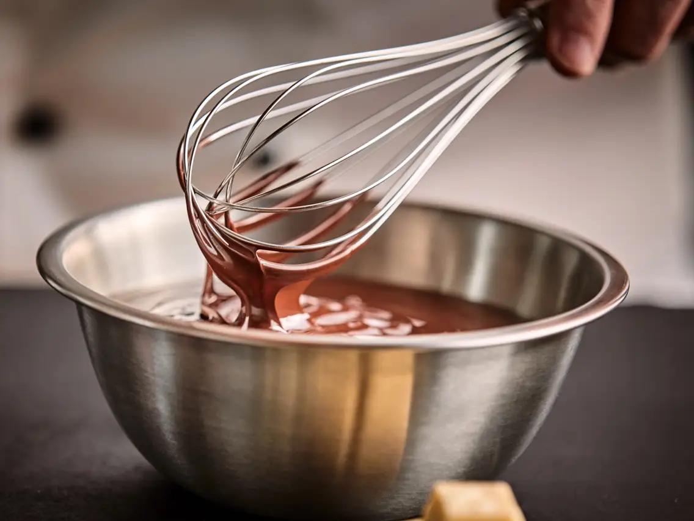

Ingredients
115g softened butter100g light brown sugar
75g granulated sugar
1tsp vanilla extract
1 egg
150g all purpose flour (plain flour)
30g cocoa powder
1/4 tsp salt
1/2 tsp baking powder
85g white chocolate chips
175g milk chocolate chips
100g smarties (optional)
Method
- Preheat the oven to 175ºC/350ºF
- Put the softened butter, brown sugar and granulated sugar into the bowl of your stand mixer. Beat them together until the mixture is lighter and everything is well combined. (about 3 minutes)
- Add the vanilla extract and the egg, then beat once more until everything is creamy and even lighter in colour. (This takes about 3-4 minutes)
- Add in the flour, cocoa powder, salt and baking soda, then mix until the flour is just combined.
- Tip in the the white and milk chocolate chips into the mixture.
- Then mix until everything is combined.
- Roll golf ball sized balls of dough and place them onto a baking sheet lined with cooking paper. Ensure they are 5cm (2 inches) apart
- Bake for 10 minutes until lightly golden. (They will be soft when you take them from the oven!)
- Carefully transfer the cookies still on the cooking paper to a cooling rack, then use a spoon to gently flatten the still soft cookies.
- Leave the cookies to cool.
Equipment Needed
- Large mixing bowl (if not using a stand mixer)
- Wooden spoon or spatula, for mixing
- Baking trays
- Grease proof paper
- Cooling rack